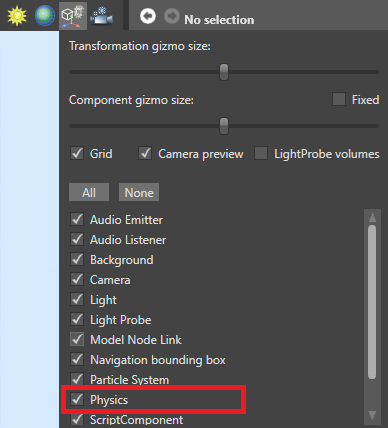

Colliders
Warning
Приносим свои извинения за неудобства. Для этой страницы нет перевода на русский язык. Она будет отображаться на английском языке.
Beginner Designer
To use physics in your project, add a collider component to an entity.
Colliders define the shapes and rules of physics objects. There are three types:
- static colliders don't move (eg walls, floors, heavy objects, etc)
- rigidbodies are moved around by forces such as collision and gravity (eg balls, barrels, etc)
- characters are controlled by user input (ie player characters)
You can also:
- set the shape of collider components
- make triggers, and detect when objects pass through them
- constrict collider movement with constraints
How colliders interact
Colliders interact according to the table below.
| Kinematic objects | Kinematic triggers | Rigidbody colliders | Rigidbody triggers | Static colliders | Static triggers | |
|---|---|---|---|---|---|---|
| Kinematic objects | Collisions | Collisions | Collisions and dynamic | Collisions | Collisions | Collisions |
| Kinematic triggers | Collisions | Collisions | Collisions | Collisions | Collisions | Collisions |
| Rigidbody colliders | Collisions and dynamic | Collisions | Collisions and dynamic | Collisions | Collisions and dynamic | Collisions |
| Rigidbody triggers | Collisions | Collisions | Collisions | Collisions | Collisions | Collisions |
| Static colliders | Collisions | Collisions | Collisions and dynamic | Collisions | Nothing | Nothing |
| Static triggers | Collisions | Collisions | Collisions | Collisions | Nothing | Nothing |
"Collisions" refers to collision information and events only. This means the collision is detected in the code, but the objects don't bump into each other (no dynamic response).
"Dynamic" means both collision information and events, plus dynamic response (ie the colliders bump into each other instead of passing through).
For example, rigidbody colliders dynamically collide with static colliders (ie bump into them). However, no objects dynamically collide with triggers; collisions are detected in the code, but objects simply pass through.
Show colliders in the Scene Editor
By default, colliders are invisible in the Scene Editor. To show them:
In the Game Studio toolbar, in the top right, click the Display gizmo options icon.

Select Physics.

The Scene Editor displays collider shapes.
Show colliders at runtime
You can make colliders visible at runtime, which is useful for debugging problems with physics. To do this, use:
this.GetSimulation().ColliderShapesRendering = true;
Note
Collider shapes for infinite planes are always invisible.
Keyboard shortcut
To show or hide collider shapes at runtime with a keyboard shortcut, use the Debug physics shapes script.
In the Asset View, click Add asset.
Select Scripts > Debug physics shapes.

In the Game Studio toolbar, click Reload assemblies and update scripts.

Add the Debug physics shapes script as a component to an entity in the scene. It doesn't matter which entity.

The script binds the collider shape visibility to Left Shift + Left Ctrl + P, so you can turn it on and off at runtime. You can edit the script to bind a different key combination.